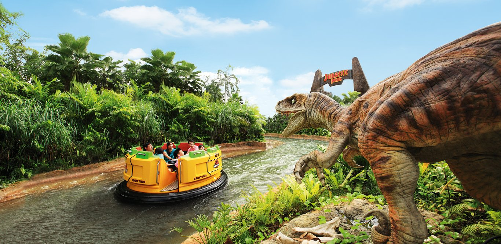

Singapore's first and only Universal Studios theme park, featuring 24 rides, shows and attractions in seven different themed zones
Attractions include Battlerstar Galactica:HUMAN VS CYLON,Revenge of the Mummy,Transfomers The Ride,Jurassic Park Rapids Adventure
Grab your friends and family and come down to Resort World Sentosa to enjoy a day of relaxation and fun filled activites at a very affordable price
TRANSFOMERS THE RIDE: The Ultimate 3D Ride
Get ready to experience this hyper-realistic 3D indoor thrill ride, right in the middle of all the action in the incredible world of TRANSFORMERS.
Experience firsthand the epic battle of AUTOBOTS vs DECEPTICONS through this 3D Action packed ride
Revenge of the Mummy
Get ready to be transported back to ancient egypt where we are plauged on all sides by huge fireballs, swarms of scarab beetles and an army of warrior mummies, all in total darkness
Attraction is a high speed roller coaster filled with sudden and dramatic acceleration, climbing, tilting, dropping, and backwards motion
Battle Star Galatica: HUMAN VS CYLONE
Choose your side:Human or Cylon-as you engage in the ultimate intergalactic battle between good and evil on the world's tallest dueling roller coasters! Themed after the hit television series Battlestar Galactica, these spectacular, intertwined coasters offer a truly exhilarating adventure as your twist, turn and drop. Riders on both coasters will experience unbelievable thrills as they race towards each other
Jurassic Park Rapid Adventures
Get ready for a white water raft system with state-of-the art animatronics and a thrilling white water drop, thrill-seekers on circular rafts will be tossed on waterways within the Jurassic Park compound, where prehistoric creatures roam free. Riders be aware, there's a high chance of getting wet.

Other Attractions
Showtimes like WATERWORLD AND LIGHTS,CAMERA,ACTION which serve as an alternative towards rollercoasters and rides.These shows are filled with life action and stunning visuals and effects that makes it spectacular and not to be missed. As such, it could serve as an additional highlight to riders as well

Other Attractions
Sherk's 4D Adventure where we can get to see, hear, feel the action from our seats, throughout the short film.Effects include jumps, bumps, bounces, air blasts and water spray that bring the action to life for each guest
How To Get Here
Address:8 Sentosa Gateway,098269
Opening hours: 10AM-7PM on weekdays
Off-Peak (Mon - Thu, except School & Public Holidays)
Peak (Fridays, Saturdays, Sundays, Public Holidays, June, December)